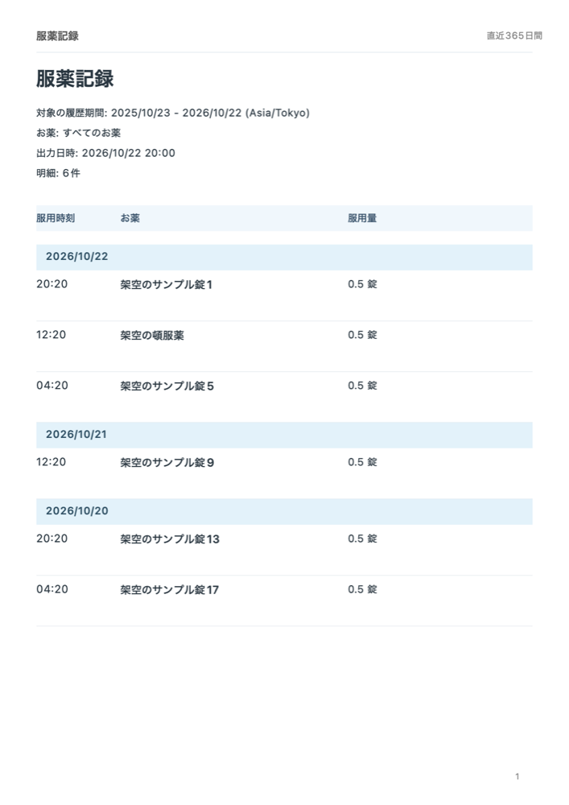

使い方ガイド・診察の準備
飲んだ薬の記録を
診察用PDFにする方法
服薬履歴から、実際に飲んだ薬をA4のPDFにまとめられます。診察や薬局で記録を見せたいときに使えます。
STEP 1
服薬履歴を開く
アプリで「服薬履歴」を開きます。記録のある薬を1種類だけ共有したい場合は、「表示するお薬」から選べます。すべての薬を含めたい場合は「すべてのお薬」のままにします。

STEP 2
「服薬記録をPDFで共有」を選ぶ
履歴の下部にある「服薬記録をPDFで共有」を選びます。服用済みの記録がない場合、この操作は選べません。
PDFの対象は直近365日間です。画面で選んでいる日付を変えても、PDFの対象期間は変わりません。
STEP 3
PDFを確認して共有する
PDFには、実際に飲んだ日時、薬の名前、服用量が日付ごとに並びます。記録メモがあれば薬名の下に入ります。iPhoneの共有画面で保存先や共有先を選んでください。
予定、飲み忘れ、スキップ、未記録の項目はPDFに入りません。共有前に内容を確認し、渡す相手を選んでください。
